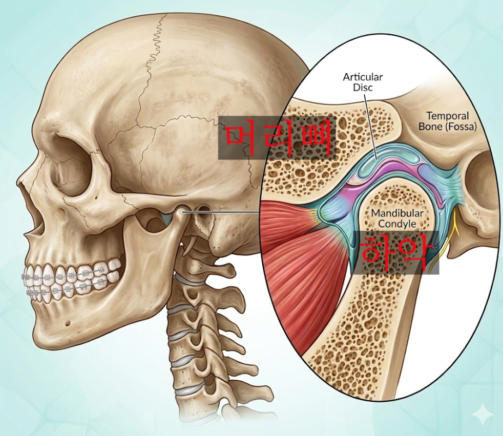

예전에 한 환자분께서 턱관절 질환을 가지고 계셨었는데, 덧니로 인해 교정 치료를 너무 하고 싶어한 적이 있습니다.
"저는 턱 아픈거 제가 다 알고 문제가 생겨도 다 책임지겠습니다. 교정 치료를 당장 시작하고 싶습니다."
당장 교정 치료를 해드리고 싶은 마음은 굴뚝같았지만, 교정을 시작해서는 안될 정도로 턱관절 질환이 심하신 상태였습니다.
"환자분께서 교정을 시작하고 싶어하시는 마음은 충분히 이해됩니다. 그렇지만 턱관절이 먼저 안정이 되어야해요.
교정을 시작하는 건 쉽지만, 턱관절 안정이 되지 않는다면 치료가 언제 끝날지 장담하기 어려워요."
그렇다면 왜 이 환자에게 교정치료를 만류해야만 했을까요? 오늘은 치아교정과 턱관절 사이 관계에 대해 짧게 이야기해보려고 합니다.
저희 과에서 처음 뵙는 환자분들에게 꼭 드리는 질문입니다.

우리가 흔히 "턱관절"이라 부르는 부위의 정식 명칭은 TMJ(측두하악관절, Temporomandibular Joint)입니다. 측두골과 하악골의 과두가 만나 이루는 관절인데, 여기서 중요한 건 하악골입니다. 아랫니들을 담고 있는 뼈이기 때문이죠.
입을 벌릴 때 소리가 난다는 건, 높은 확률로 이 관절 안의 디스크가 제자리를 벗어났다는 신호입니다. 디스크는 두 뼈 사이에서 압력을 흡수하고 마찰을 줄여주는 역할을 하는데, 디스크가 제 위치에 있지 않으면 입을 벌리고 다물 때마다, 식사할 때마다, 이를 악물 때마다 관절이 유해한 압력을 그대로 받게 됩니다.
일부 환자에서는 이 상황이 지속되면서 턱관절 질환이 점차 악화되고, 심한 경우 퇴행성 관절염처럼 하악 과두 자체가 흡수되기도 합니다.
교정치료는 단순히 치아를 가지런히 하는 것을 넘어, 위아래 치아가 씹을 때 정확히 맞물리도록 하는 치료입니다.
이 과정에서 핵심 전제가 하나 있습니다. 하악의 위치가 안정적이어야 한다는 것입니다. 치아를 담고 있는 하악골 자체가 움직여버린다면, 그래서 치아들이 통째로 어느 방향으로 이동해버린다면, 그 속도와 양을 교정치료로는 도저히 따라잡을 수 없습니다.
앞서 제가 "치료를 시작하는 건 쉽지만, 끝이 나지 않는다"고 표현한 것도 이 때문입니다. 실제로 하악 과두가 1만큼 흡수되었을 때 아래 치아들은 2~3만큼 변화합니다.
불안정한 턱관절 상태에서 시작한 교정치료는, 결국 기초가 튼튼하지 않은 상태에서 쌓아 올리기 시작한 누각과 같다고 생각합니다.
그렇기 때문에 교정을 시작하기 전 턱관절을 전문적으로 진료하는 구강내과 선생님에게 정확한 진단과 치료를 받을 것을 권유드립니다.
사실 이 주제는 제가 전공의 2년차 때 대학원에서 한 학기 내내 배울만큼 그 역사와 깊이가 상당한 주제입니다. 턱관절 질환은 무엇인지, 치료는 어떻게 하는 것인지, 교정치료와 연관성이 있는 것인지, ...
오늘은 그 방대한 내용 중 [턱관절 질환이 있는 환자는 교정 치료를 바로 시작해도 되는가]에 대한 내용을 최대한 압축하고, 실제 진료실에서 환자분들과 나누는 이야기 위주로 구성해드렸는데요.
교정치료 받으러 갔는데 턱관절이 안좋아서 못한다는 이야기를 하더라... 는 궁금증을 가지셨던 분들에게 모쪼록 조금이나마 도움이 되었으면 하는 마음입니다.
긴 글 읽어주셔서 감사합니다.
이상 교정과의사 손창한이었습니다 :-)